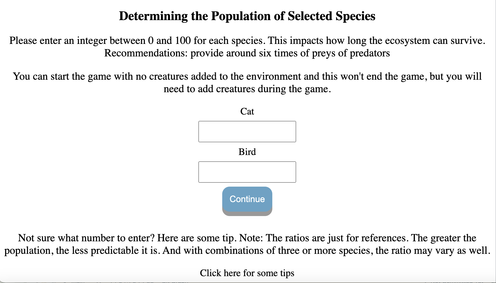

Ecosystem Simulator Guide
This is a simple guide to show you how the game works
Setup the Ecosystem
Before entering the game, you need to go through several steps to build the ecosystem.
Setup Step 1

The first step is to choose whether you want to start with a fixed combination or your own choice.
The first two options choose the species and the amount of resources in the environment for you while the third one allows you to choose whatever species you like and decide the amount of resources in the ecosystem.
Setup Step 2

If you chose the third option in the previous step, you need to complete this additional step: choosing the species to place in the ecosystem.
Setup Step 3

In this step, you need to enter the number of available resources and creatures.
Tips for determining population size
Deciding the population's size could be hard. Thus, at the bottom of the page, some tips are provided. Clicking on the text for tips to be popped up. The tips are concluded by the author after running a certain number of tests. However, they are just for references, since the ecosystem is not always predictable. Different combinations, greater population size and etc could impact the ratios to keep the balance. Author decides to not reveal too many about this and leave it for the players to discover. (Have questions or advice? Take the survey to tell the author!)